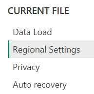
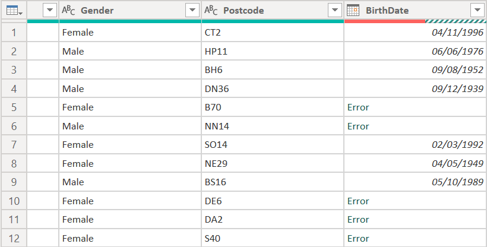
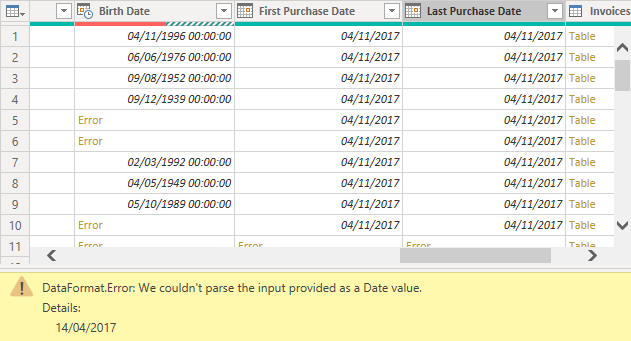
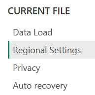
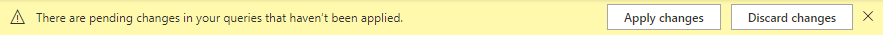

In regional settings, set the value to English (United Kingdom) and once set, click OK (if you see two drop down fields rather than one, you are in the wrong regional settings menu)

Issues with the region format for date columns
In Lab 3 Exercise 3 – While in the Power Query Editor, students using computers that have a regional date format that differs to dd/mm/yyyy may experience errors appearing in date columns when applying formatting.
Error
When applying a Date format to the FirstPurchaseDate, LastPurchaseDate and BirthDate columns, errors appear where specific data values were. This issue occurs when the original date format dd/mm/yyyy conflicts with the regional settings of Power BI where a student is using a different format e.g. mm/dd/yyyy. The error occurs when a value of more that 12 is present in the first two digits e.g. 25/12/2020 which is fine for dd/mm/yyyy but does not work for mm/dd/yyyy.


Solution
This issue cannot be resolved in Power Query Editor. To resolve this switch to the Power BI Desktop window and select the File tab in the ribbon and choose Options and settings > Options. Under the heading CURRENT FILE click on Regional Settings (there is an option for regional settings under the GLOBAL heading so be careful to pick the right option).
|
 |
In regional settings, set the value to English (United Kingdom) and once set, click OK (if you see two drop down fields rather than one, you are in the wrong regional settings menu)
|
A yellow banner will appear at the top of the Power BI Desktop, choose Apply changes and the format will be amended for this current file. This can take some time.

Note that you have only changed this setting for the current PBIX file, this setting will not impact your other Power BI project files. Once the changes have been applied, return to Power Query Editor.
Return to the lab
Click here to return to where you were in the lab.